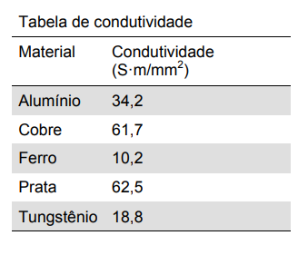
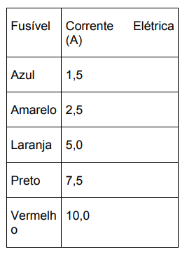

🔹 Ir para Problema 78 | 🔹 Ir para Problema 80
116. (ENEM)
A resistência elétrica de um fio depende de suas dimensões e da estrutura do material (caracterizada pela condutividade). A tabela a seguir relaciona valores de condutividade em temperatura ambiente:


Mantendo-se as mesmas dimensões geométricas, o fio que apresenta maior resistência elétrica é feito de:
1) A resistência elétrica de um fio é inversamente proporcional à:
2) Logo, quanto maior a condutividade, menor será a:
3) Comparando os materiais, o que possui maior condutividade é:
Portanto, o fio com menor resistência elétrica é de:
Assinale a alternativa correta: